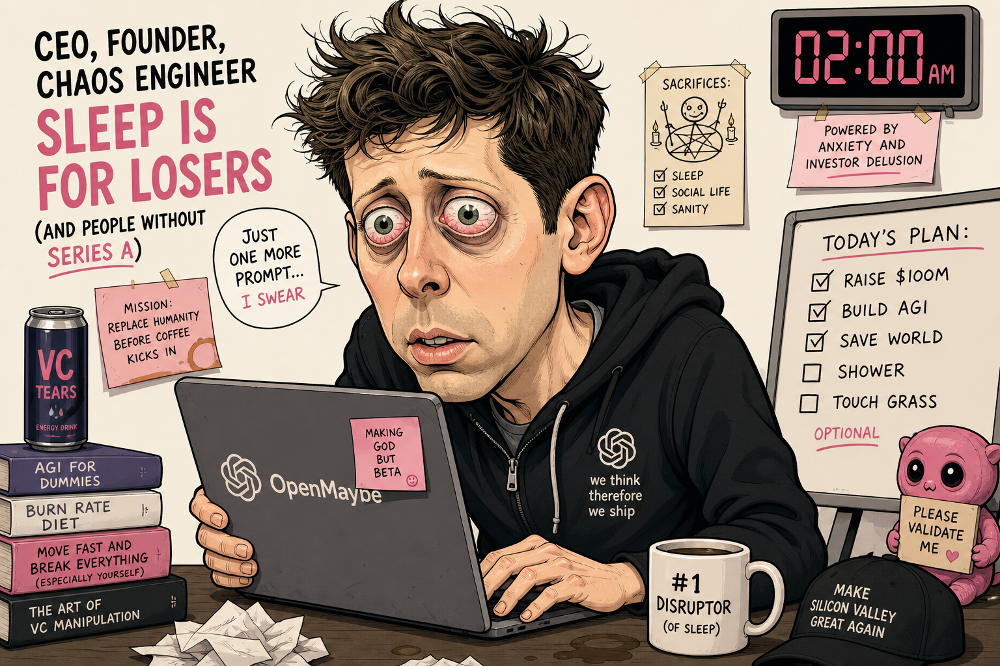

meet sam
he's fine. (he's not fine.)
closedai
- send prompt
- test fail
- update linear
- push github
- repeat until dead
sam finds creation
starts one loop. goes to touch grass.
rebrand time
- had time to market
- had time to sleep
- closedai → manthropic
sam loves creation
cortisol: down bad (good)
what is creation?
- a local agent company on your laptop
- not one chatbot — a whole loop
- your keys, your machine, open source
- idea in → shipped product out
two ways in
same loop either way — pick your route
🎯 you have an idea
existing product · side project · "i know what i want"
- type your idea in compose (or pick a tavily suggestion)
- tavily researches around your seed
- nebius writes a plan for your product
- agent iterates on your vision every turn
- linear tracks YOUR plan issues
your idea → research → plan → ship
🌱 starting fresh
greenfield · blank slate · "surprise me overnight"
- empty workdir — agent scaffolds from zero
- tavily researches markets with no seed
- nebius picks idea, name, repo slug
- optional SDK templates (stripe, qdrant, cli…)
- wake up to a brand-new product
blank → research → idea picked → ship
then the loop runs
whether you brought an idea or started fresh:
- researches once at kickoff (tavily + firecrawl — not every turn)
- plans + brands the product (nebius token factory)
- writes real code with 43 local coding CLIs (codex, cursor, openclaw…)
- runs pytest + browser QA after every turn
- syncs linear kanban — single source of truth so agents don't drift
- pushes github + emails you kickoff, progress, and done
- mem0 recalls past decisions · supercompress squishes context
- nebius reads linear + QA → picks next step or stops
- loops until MVP done — up to ~9 hours unattended
- manual takeover — steer mid-run if you need to
how it works — setup
- tavily + firecrawl research the market
- nebius writes the build plan
- composio creates linear + github + kickoff email
- mem0 + supercompress prep long-run memory
how it works — every turn
- Prism recalls and compresses context
- coding agent builds (optional parallel agents)
- pytest + browser QA
- Forge reads Linear and routes the next step
- you can take over mid-run anytime
creation
start loop → go bed → wake up shipped